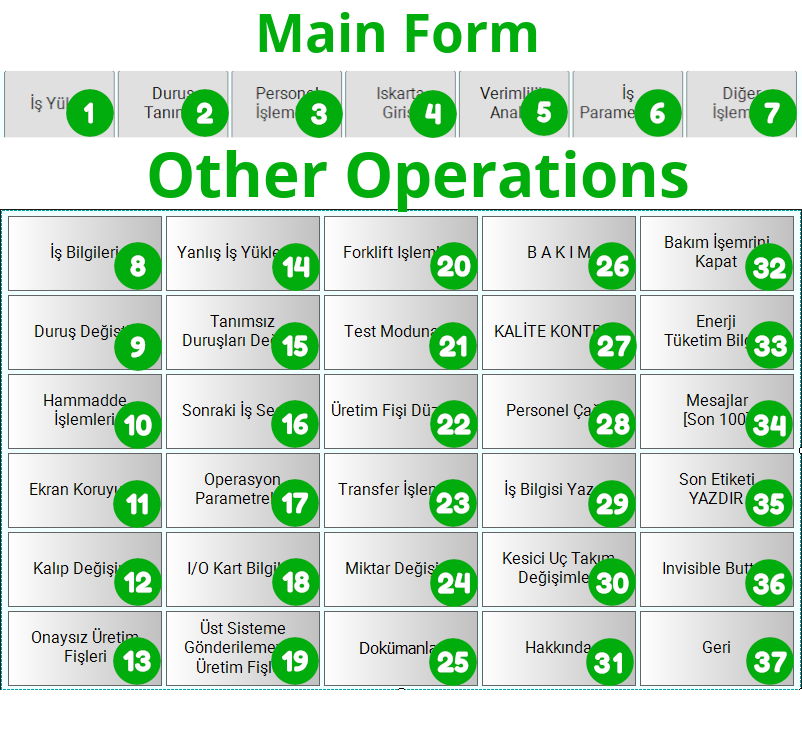

Örnek: Buton Konfigürasyonu¶
Bu örnekte trexMes Main Form üzerindeki standart butonları yapılandıracak, tıklamalarını yakalayıp Method Invoker ile panel method'unu çağıracağız.
Hedef¶
- Sistem açıldığında Main Form'da 3 buton görünür olsun: "Yeni", "Kaydet", "İptal".
- Operatör "Kaydet" butonuna bastığında
Form Eventsile yakalayalım. - Form verisini panel'in
OrderService.SaveOrdermethod'una geçelim. - Cevap geldiğinde onay ekranı gösterelim.
Önkoşullar¶
- Çalışan trexMes Edge bağlantısı
- Panel tarafında
OrderService.SaveOrdermethod'u tanımlı - Main Form üzerinde 1-10 arası buton indeksleri kullanılabilir
Buton İndeksleri¶
Aşağıdaki görselde Main Form'daki butonların indeks numaraları görünmektedir:

Akış Şeması¶
flowchart TB
subgraph init["AKIŞ 1: Sistem Başlatma"]
A[System Events<br/>UserLoginEvent] --> B[Button Configurator<br/>1=Yeni, 2=Kaydet, 5=İptal]
B --> C[Responser]
end
subgraph click["AKIŞ 2: Tıklama Yakalama"]
D[Form Events<br/>btnSave click] --> E[Method Invoker<br/>OrderService.SaveOrder]
E --> F[Responser]
end
subgraph ret["AKIŞ 3: Method Cevabı"]
G[Method Returns<br/>SaveOrder] --> H[switch<br/>success?]
H -->|true| I[Custom Form<br/>Onay]
H -->|false| J[Custom Form<br/>Hata]
I --> K[Responser]
J --> K
end
style A fill:#ccffcc,color:#000
style B fill:#ccffcc,color:#000
style C fill:#ccffcc,color:#000
style D fill:#ccffcc,color:#000
style E fill:#ccffcc,color:#000
style F fill:#ccffcc,color:#000
style G fill:#ccffcc,color:#000
style I fill:#ccffcc,color:#000
style J fill:#ccffcc,color:#000
style K fill:#ccffcc,color:#000Adım Adım Yapılandırma¶
Akış 1: Sistem Başlatma¶
1.1. System Events¶
| Alan | Değer |
|---|---|
| Name | UserLogin |
| Event | /UserLoginEvent |
| Is Handled | false |
1.2. Button Configurator¶
| Alan | Değer |
|---|---|
| Name | MainFormButtons |
| Form In Main Form | true |
| Form Name | (otomatik AppForm) |
props listesi:
p (Index) |
v (Caption) |
d (Visible) |
e (Override) |
f (Name) |
|---|---|---|---|---|
1 |
"Yeni Sipariş" |
true |
false |
btnNewOrder |
2 |
"Kaydet" |
true |
true |
btnSave |
5 |
"İptal" |
true |
false |
btnCancel |
Info
e=true (override) demek: "Bu butonun panel-default davranışı yerine bizim akışımız çalışsın." Sadece Kaydet butonunu özelleştirdiğimiz için sadece onu override ediyoruz.
1.3. Responser¶
Tüm varsayılan değerlerle.
Akış 2: Tıklama Yakalama¶
2.1. Form Events¶
| Alan | Değer |
|---|---|
| Name | SaveClick |
| Event | /AppForm_btnSave_Click |
| Form Name | AppForm |
2.2. Method Invoker¶
| Alan | Değer |
|---|---|
| Name | SaveOrder |
| Service | OrderService |
| Method | SaveOrder |
props listesi:
p (Param) |
d (Data) |
dt (Type) |
|---|---|---|
orderNo |
payload.formData.orderNo |
msg |
customer |
payload.formData.customer |
msg |
qty |
payload.formData.qty |
msg |
operatorId |
currentUser.id |
flow |
2.3. Responser¶
Tüm varsayılan değerlerle.
Akış 3: Method Cevabı¶
3.1. Method Returns¶
| Alan | Değer |
|---|---|
| Name | SaveOrderReturn |
| Method Name | SaveOrder |
3.2. switch Node (Standart Node-RED)¶
payload.returnValue.success değerine bakarak iki dala ayrılır:
- Dal 1:
== true→ Onay formu - Dal 2:
!= true→ Hata formu
3.3. Onay Custom Form¶
Basit bir bilgi formu: "Sipariş #X başarıyla kaydedildi."
3.4. Hata Custom Form¶
Basit bir uyarı formu: "Kayıt sırasında hata oluştu."
3.5. Responser¶
İki dalı tek bir Responser'a bağlayın.
Method Invoker Çıkışı¶
{
"operationtype": "MethodInvokerProcess",
"receiveddata": { /* form click data */ },
"name": "SaveOrder",
"message": "OrderService.SaveOrder",
"value": [
{ "ParameterName": "orderNo", "Value": "ORD-001" },
{ "ParameterName": "customer", "Value": "ACME" },
{ "ParameterName": "qty", "Value": 50 },
{ "ParameterName": "operatorId", "Value": "OP-007" }
]
}
Method Returns Girişi¶
Panel method'u başarılı tamamladığında:
{
"payload": {
"methodName": "SaveOrder",
"returnValue": {
"success": true,
"orderId": 4521,
"createdAt": "2026-05-11T14:30:00Z"
},
"executionTime": 245
}
}
Hata durumunda:
{
"payload": {
"methodName": "SaveOrder",
"returnValue": {
"success": false,
"errorCode": "DB_TIMEOUT",
"errorMessage": "Veritabanı zaman aşımı"
}
}
}
Beklenen Davranış¶
Operatör Giriş Anı¶
UserLoginEventtetiklenir.- Main Form'da 1, 2 ve 5 numaralı butonlar görünür hale gelir:
- Buton 1: "Yeni Sipariş" (panel default davranışı)
- Buton 2: "Kaydet" (bizim akışımız tetiklenecek)
- Buton 5: "İptal" (panel default davranışı)
- Diğer butonlar gizli kalır.
Operatör Kaydet'e Bastığında¶
Form Eventstetiklenir, form verilerimsg.payload.formData'da gelir.Method Invokerparametreleri toplar,OrderService.SaveOrderçağrılır.- İlk akış kapanır (
Responser). - Panel veritabanı işlemini yapar (~300 ms).
- Cevap gelir →
Method Returnstetiklenir. switchbaşarı durumuna göre dallara ayırır.- Uygun form (
OnayveyaHata) panelde gösterilir.
Yaygın Sorunlar¶
Butonlar görünmedi
formainform: trueolduğundan emin olun.- Buton indeksleri 1-10 aralığında mı?
- Akışta
Responservar mı?
Kaydet butonu hâlâ panel default'unu çalıştırıyor
Button Configurator'da o butonun e (IsToOverrideDefaultHandler) true olmalı.
Form Events tetiklenmiyor
- Buton
ComponentName(falanı)Form Eventsevent ismiyle uyumlu mu? - Event isminde
/AppForm_btnSave_Clickgibi formname prefix var mı?
Method cevabı gelmiyor
Method Returns'tekimethodname,Method Invoker'dakimethodile aynı mı?- Panel tarafında method gerçekten cevap dönüyor mu? (panel log'una bakın)
İleri Konular¶
Çoklu Method Cevabı Dinleme¶
Birden fazla Method Returns node'u kullanabilirsiniz; her biri farklı method ismi dinler. Bu sayede aynı flow'da paralel olarak SaveOrder, DeleteOrder, UpdateStock cevaplarını dinleyebilirsiniz.
Hata Recover¶
Method Returns mesajında success: false geldiğinde Method Invoker'ı tekrar tetikleyerek retry mantığı kurabilirsiniz. Bu durumda retry sayısını flow context'te tutmaya dikkat edin.
Tamamlandı!¶
Üç temel örneği tamamladınız. Artık trexMes paneliniz ile karmaşık iş akışları kurabilirsiniz.
Sonraki adımlar için Node Referansı bölümündeki tüm node'ları inceleyin ve SSS sayfasındaki sorun gidermeyle tanışın.